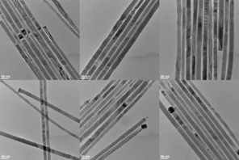
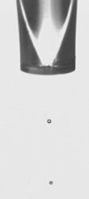
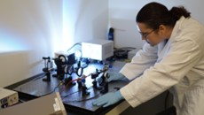

US Nano was a nanomaterials start-up working on producing printed electronics. The work consisted of scaling up the synthesis of semiconducting nanowires, formulating nanowire inks, and creating various printed electronic devices using these inks. Introduction of applied statistical methods such as Design of Experiments (DOE) and statistical process control accelerated development across all facets of the work.
Scale-up of Nanowire Synthesis
US Nano developed a robust process for large-scale manufacturing of inorganic semiconductor nanowires. While various laboratory scale methods exist, they tend to have high materials cost, produce very small quantities (milligrams) of product, and do not scale well.

We successfully reduced the materials cost 140-fold. We improved the reliability of the synthesis, thus allowing a scale-up of nanowire production to gram scale. This method was robust and used to produce various semiconductor compositions. DOE methods such as fractional factorial design and response surface methodology allowed us to vary multiple predictors at once and iterate to new materials 3X faster than the initial work using one predictor/factor at a time experimentation.
Ink Formulation and Printing
The resulting nanowires were incorporated into functional inks for printed/flexible electronics. In addition to DOE-based ink formulation projects, quality assurance measures such as statistical process control were implemented to keep our nanomaterials printer fully operational.

Experimental inks can deposit residue on the inkjet nozzle that isn’t easily detected. Running regular jetting tests with known inks can determine when the system performance is starting to degrade, even when the residue or build-up is undetectable by eye.
Jetting tests involve collecting thousands of jetting images and analyzing the drop speed and velocity for deviation from normal. Home-written Excel VBA macros reduced analysis time from hours to under five minutes, allowing the tests to run more frequently.
Nanowire Devices
Printing electronics allows for an almost infinite number of device configurations since the cost of prototyping is minimal. A prototype printed photosensor was produced as a demonstration. The demonstration device validates that inorganic semiconducting nanowires can be incorporated into flexible/printed electronics using standard plastic substrates and commercial printing methods. The technology developed in this project will enable the creation of a variety of additional devices on various substrates, including flexible films, such as plastics and metal foils, in addition to conventional rigid substrates, such as glass or semiconductor wafers. We have successfully printed our semiconductor inks on paper, plastics, and metal foils.

By iterating through designs, we produced a device with a million-fold better photocurrent than the initial simple gap devices. Again, DOE methods allowed us to quickly hone in on optimal designs without testing every configuration.
Patents and Papers
Apparatus and methods for continuous flow synthesis of semiconductor nanowires, US9306110B2
Synthesis of CdSe/ZnS core/shell semiconductor nanowires, US9627200B2
Petchsang N, McDonald MP, Sinks LE, Kuno M. Light induced nanowire assembly: the electrostatic alignment of semiconductor nanowires into functional macroscopic yarns. Adv Mater. 2013 Jan 25;25(4):601-5. doi: 10.1002/adma.201202722. Epub 2012 Oct 2. PMID: 23027517.
Press
Nanowerk Blog, Assembling functional nanowire yarns with light
Florida High Tech Corridor 2016 Faces of Technology.
Print article, p. 38: http://usnanollc.com/wp-content/uploads/2016/04/FHT-2016-compressed.pdf
Video Interview: